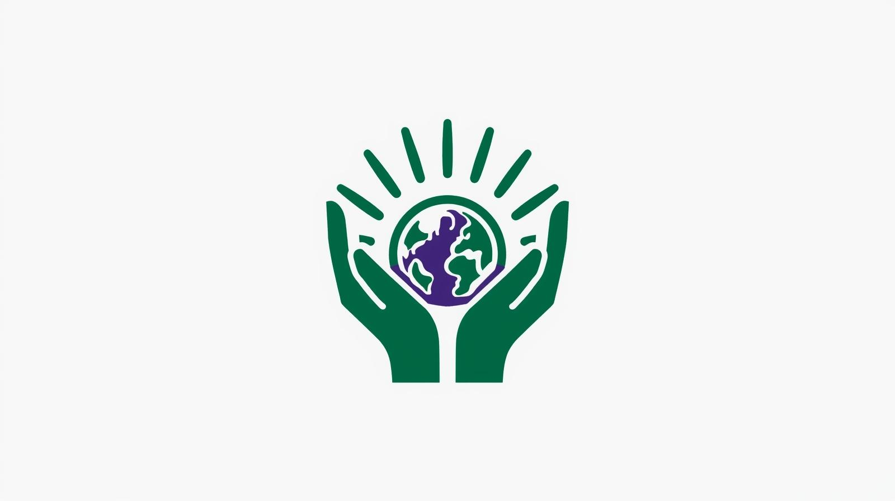

Protect People. Power the Future.
The Future Justice Party operates as a forward-thinking alliance which works to protect natural resources and fight for women's equality and defend minority groups and establish economic fairness and set up proper artificial intelligence management systems. The Future Justice Party operates as a progressive alliance which works to protect the environment and fight for women's rights and defend minority groups and establish economic fairness and set up proper artificial intelligence management systems. The Future Justice Party operates as a progressive alliance which works to protect the environment and fight for women's rights and defend minority groups and
Deep Green (sustainability) + Violet (rights & equality)
“Protect People. Power the Future.”
Logo / Mascot

Party Branding Page
- Party Name: Future Justice Party (FJP)
- Party Colors: Deep Green (#1bb36b) and Violet (#8a5cff)
- Mascot/Logo Concept: Hands protecting Earth + Rising Sun (hope + protection + future)
- Slogan: “Protect People. Power the Future.”
Party Platform Page
10 platform planks across social, economic, foreign, and domestic issues
-
Climate Action & Clean Energy
We support large-scale public investment in renewable energy, clean manufacturing, and climate resilience. Our strategy follows the guidelines of the Inflation Reduction Act (2022) which established federal programs to speed up clean energy deployment and boost American-made product manufacturing. Our strategy follows the guidelines of the Inflation Reduction Act -
Healthcare Access & Lower Drug Costs
Healthcare needs to provide services which people can afford and obtain easily. Our organization backs policies which work to decrease medication prices and provide enhanced accessibility. The Inflation Reduction Act (2022) includes Medicare drug-price negotiation as part of its approved reforms which support these changes. -
Women’s Reproductive Freedom
We support federal protections for reproductive rights, including access to contraception and abortion. The power to decide about pregnancy rests with personal choices and medical care decisions instead of political authorities. -
AI Regulation & Creative Rights
AI companies must not train on artists’ work without consent and compensation. The organization supports rules which require training data to become public information. The organization supports training data transparency requirements together with opt-out/opt-in systems and penalties which enforce punishment for unauthorized usage that damages designers and their creative works. -
Social Welfare & Poverty Reduction
Our organization backs specific anti-poverty initiatives which create better futures for children while they help maintain their families' financial security. The establishment of a strong safety net allows people to join the economy for an extended period of time while their communities obtain better health outcomes. -
Disability Rights & Accessibility
Our organization supports better enforcement of disability protection laws together with expanded rules which make housing and transit and digital services more accessible to people. The government needs to eliminate all obstacles which block citizens from achieving complete social participation. -
LGBTQ+ Civil Rights
The organization supports federal anti-discrimination laws which defend workers and residents who need medical treatment and educational services. The law requires equal treatment for all people while dignity must remain independent from residential areas. -
Fair Taxation & Responsible Budgets
Our organization supports a progressive tax system which requires large corporations to pay their fair share of taxes. The Tax Cuts and Jobs Act of 2017 focused on general tax reductions but we support a tax system which supports equality and public services through proper financial management. -
Education & Workforce Transition
Our organization endorses funding for public education alongside job training programs which help employees who lost their positions because of AI and automated systems. The economic system needs to distribute its rewards between working people and those who need to learn about new technologies. -
Foreign Policy: Alliances & Human Security
Our organization supports international partnerships which work to create climate solutions and technological standards through diplomatic efforts. Security depends on three essential elements which include stable energy systems and disaster protection and democratic values in addition to military capabilities.
Campaign Strategy
1) Fundraising Approach
The FJP campaign will use small-dollar fundraising as their main strategy to prove they operate without corporate backing while they develop a grassroots image. Our organization will build trust through our monthly donation system and our detailed explanations about how $10 donations get used and our open financial disclosure practices. Our fundraising activities will consist of three main events which include community town halls and climate-service days organized with local partners and creative-industry gatherings about AI and copyright protection. The organization will pursue backing from advocacy groups which share its goals through legal channels that follow disclosure requirements while seeking financial backing from various donors instead of depending on few large donors. The message is simple: policy credibility requires financial credibility, and our campaign will be “people-funded.”
2) Staff / Volunteer Recruitment
Our recruitment efforts will target communities which actively support our main causes including climate activism and women's rights groups and disability and civil rights organizations and creative professionals who experience the effects of AI training methods. We will develop a structured volunteer progression system which starts from supporters and advances through volunteer work until reaching team leadership and regional coordination roles. The organization will deliver brief operational training programs which teach volunteers how to perform canvassing and phone banking and digital outreach activities. The organization will hire paid employees who represent all its population segments with special focus on people who experience policy results most directly. Our outreach efforts will include immigrant and international viewpoints because I study in Korea as a Korean student. The United States will gain from its democratic system through international knowledge about environmental sustainability and social safety networks which proven their effectiveness.
Target Audience & Messaging
Our key audiences are Gen Z and Millennial voters, suburban women, working families facing healthcare and cost pressures, and creative workers concerned about AI misuse. The communication strategy will unite core principles with functional benefits through its messages which state "protecting rights" and "lowering costs" and "building a safer future" by using clean energy and ethical technology. The organization will present climate policy as a moral necessity which generates employment opportunities through its focus on home-based manufacturing and local social strength development. Women need specific words to defend their right for self-determination and their need to keep things private. The presentation will show actual designer and illustrator experiences to prove why people need to obtain both permission and money for their work. The document will present its content with an optimistic tone which will focus on specific policies while promoting unity among different groups.
4) Media Strategy
Our media strategy will focus on digital platforms as our main priority while maintaining absolute trustworthiness in all our operations. The platform TikTok along with Instagram Reels and YouTube Shorts will show single-policy explanations through their short video content. The platform YouTube offers extended interviews and podcasts which help voters who want to learn more about the subject. The organization will use traditional media channels for its main announcements and older viewer segments through its selected media platforms. The organization will direct its resources to solve two essential problems which include medical expenses and create equal chances for all people to achieve financial stability. The organization will broadcast live town halls to establish open communication which people can watch from anywhere while we distribute policy briefs every week to reach both media professionals and our base of supporters. The organization will use paid advertisements to reach target groups through ethical methods which prevent false information from being spread while showing clear messages instead of creating emotional responses.
Reflection
My partner was Gyuna Bak. We worked together with one of us acting as the campaign manager and the other as the presidential candidate. The development of a single platform presented its toughest challenge because we had to find the proper equilibrium between idealistic goals and a functional strategy which would attract voters from various groups. The progressive movement faces opposition between its fundamental goals because supporters want to dedicate their entire budget to climate initiatives yet others want to focus on medical expenses and financial stability. Our roles shaped the final platform. The candidate position became my focus area because I wanted to promote four essential values which included women's rights and social protections and climate action and AI regulation for creative workers. My partner, as the manager, emphasized messaging discipline and feasibility: what we could explain simply, what would resonate with key groups, and how to avoid creating unnecessary vulnerabilities. The process showed me how political parties operate through their established network of members. Political parties exist as more than just sets of beliefs because they also function as brands which use strategies to unite members who maintain different viewpoints. A political party requires leaders to establish their essential goals while they must create an understandable political narrative which will appeal to voters.